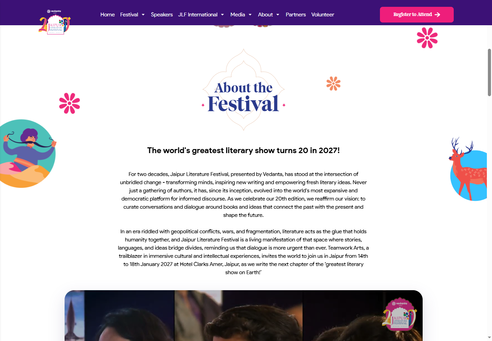
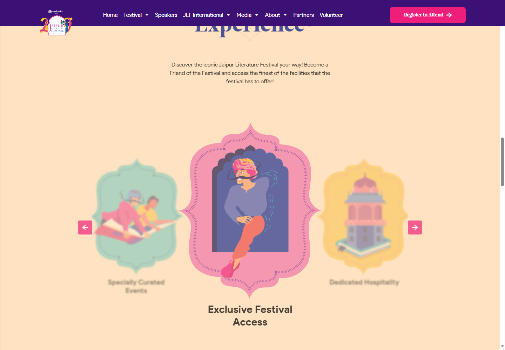
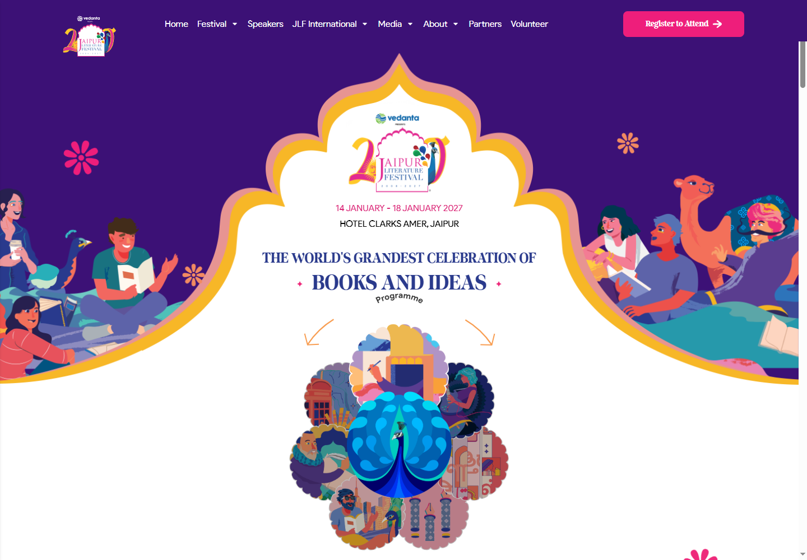
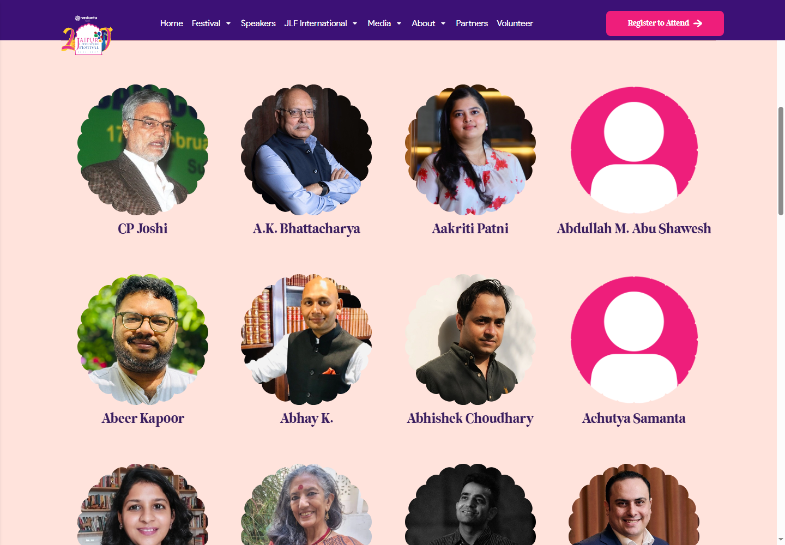
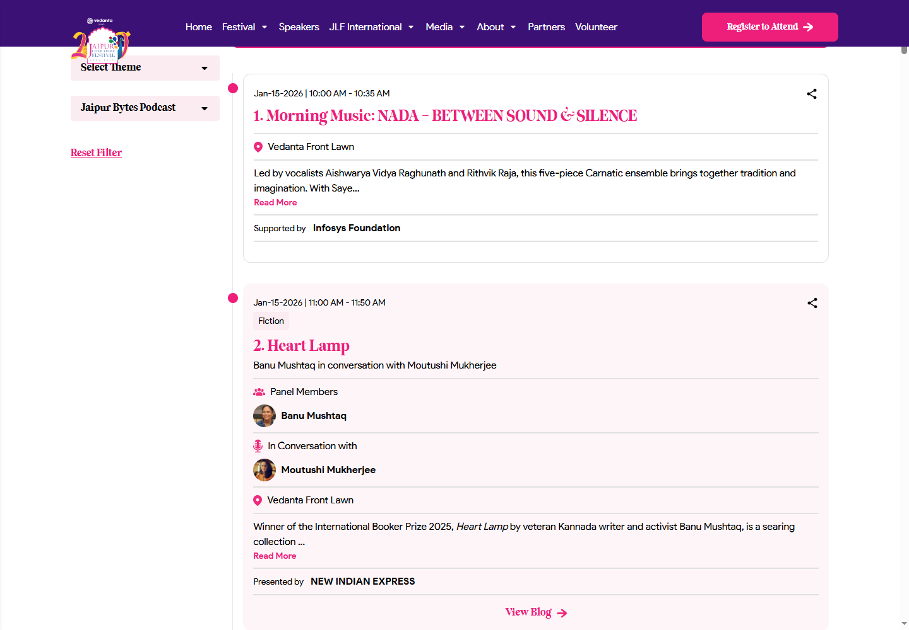
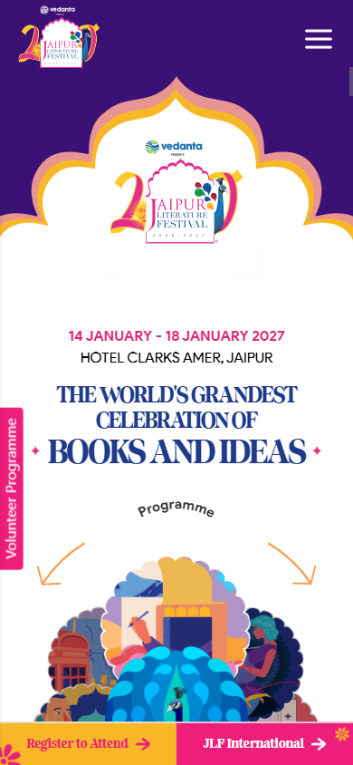

02 / Story and experience
Use authentic Indore photography and concise introductory copy. Secondary experiences should reflect actual festival offerings.




Selected screenshots from the live Jaipur Literature Festival website, captured in Edge. These show the existing reference, not a proposed Indore design. Desktop: 1440 × 1000. Mobile: 390 × 844.
The hero combines an architectural frame, expressive illustration and strong colour. For Indore, develop an original local composition while keeping dates, venue and actions easy to find.

Use authentic Indore photography and concise introductory copy. Secondary experiences should reflect actual festival offerings.


Bring featured speakers earlier on Indore's homepage, with full profiles and links to their sessions. Keep archive years explicit.

Programme cards need readable times, venues, participants and descriptions. Indore should clearly separate upcoming sessions from previous editions.

Jaipur uses a compact menu and bottom action bar. Indore's priority actions should be registration and programme, with comfortable tap targets and no content hidden behind fixed controls.

Read the complete redesign and migration plan. Screenshots capture selected scroll positions; dynamically loaded content may vary. This review does not cover checkout or submitted forms.